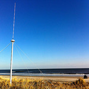

Goals
Network Goals
- To increase the numbers of coastal radars.
- To ensure that HF radar data is available in a single, standardized format.
- To make/use a set of easy-to-use, standardized products.
- To assimilate the data into ocean and ecosystem modelling.
- To develop emerging uses of HF radar.
Interactive Map of High Frequency Radar
This map shows all of the locations of the HF Radar sites all over the world.
An International Effort
The Global HF Radar Network is a new international network of the combined efforts of research insititutions, governments and companies to create a global system of measuring surface currents.

Global HF Radar (as of May 2014):
Co-Chairs:
- Hugh Roarty, HF Radar Project Manager, hroarty@marine.rutgers.edu
- Enrique Alvarez Fanjul, enriqque@puertos.es
- Lisa Hazard, lhazard@uscd.edu
- Lucy Wyatt, lucy.wyatt@jcu.edu.au